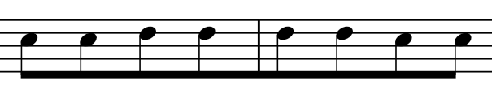
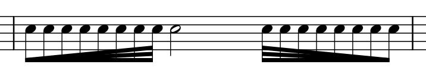
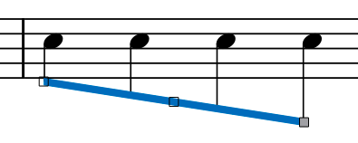
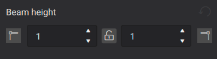

Beams
Overview
A beam is a line connecting consecutive notes to indicate rhythmic grouping of eighth or shorter notes (Wikipedia). You can change control the presence or absence of beams between notes as well as their appearance.
Controlling which notes are beamed
The default beaming of notes is determined by properties of the time signature. You can edit those defaults and thus affect the beaming of all notes within that time signature, and you can also override the beaming of individual notes to differ from the time signature defaults.
Setting the default beaming for a time signature
See the main chapter Time signatures
Each time signature has a set of beaming defaults that control the beaming of all notes in that time signature. Since you will normally want the beaming consistent throughout the score, this is usually the place to start when altering the beaming. To edit the defaults for a given time signature, use the Time signature properties dialog.
Accessing Time signature properties
- Select a time signature within the score
- Click the Time signature properties button in the Properties panel
- Edit the Beam Groups section as explained below
You can also access this dialog by right-clicking a time signature.
Note: the settings made in this dialog are per score and also per staff. To apply changes to other staves within the same score, you can Ctrl+Shift+drag the time signature to another staff, which acts similarly to adding it from the palette. To make a customized time signature available to other scores, Ctrl+Shift+drag it back to the palette.
Beam groups

To change the beaming of a note of a given duration on a given beat, click the corresponding note in the Beam groups section to toggle the beam into that note on or off. That is, if you click a note that is currently beamed to the previous note, that will break the beam, and if you click a note that is not currently beamed to the previous note, that will join them. You can also drag one of the Beam selector icons to any given note to set its beaming as explained further below.
If you select the Also change shorter notes option, then changes made to any given note will affect notes on the same beat of shorter durations as well.
Click Reset to remove all changes made since this dialog was opened. Note that this button does not reset settings back to the original defaults from the palette. To revert all changes made since the time signature was added, use the palette to replace the time signature.
Overriding the default beaming for a specific note
The time signature properties control the default beaming for notes in your score, but you can override those defaults on a note-by-note basis, such as to have one measure beamed differently from another. This can be useful when writing certain rhythms that might be more readable beamed in a non-standard manner, or in cases where the options available in Time signature properties are insufficient to create the defaults you want. It is also the only way to create beams over rests.
Beam properties are set on the notes themselves. To change the beam between two notes, you will normally start by selecting the second of the two notes, as most of the beam properties control the beam into a note. Note that these properties can be set from the Properties panel or the Beam properties palette, but this discussion will focus on the Properties panel.
To change the beaming of a given note:
- Select the note
- Select the Beam tab in the Note section of the Properties panel
- Select one of the icons to set the appropriate property

From left to right, the available properties are:
- Auto: resets the beaming of the note to the time signature default behavior
- No beam: breaks any beams into or out of the selected note
- Break beam left: breaks any beam into the selected note
- Break inner beams (8th): breaks all but one beam into the selected note (for notes that would otherwise have two or more beams)
- Break inner beams (16th): breaks all but two beams into the selected note (for notes that would otherwise have three or more beams)
- Join beams: joins a beam from the previous note into the selected note (unless the previous note is set to No beam)
Beaming over rests

To extend a beam over a rest:
- Select the rest
- Apply the Join beams or Break beam left property
Beaming over barlines

To extend a beam across a barline:
- Select the first note or rest after the barline
- Apply the Join beams property
Controlling the appearance of beams
While breaking and joining beams is a function of the individual notes, the actual appearance of the beam can be controlled by selecting either the beam itself or any of the notes it joins. Thus, to set these properties, you can either:
- Select a note that is currently beamed
- Select the Beam tab within the Note section of the Properties panel
or
- Select the beam itself
Either way, at that point, you will see the options to control the appearance of the beam.
Feathered beams

The buttons in the Feather beams section of the Properties panel can be used to indicate gradual slowing down or speeding up of the joined notes (note this is not supported in playback). These options only apply to 16th and shorter durations using multiple beams.

- None: reset the beam to standard (non-feathered) appearance
- Decelarate: feather the beams to fan inward to indicate a gradual slowing down
- Accelerate: feather the beams to fan outward to indicate a gradual speeding up
Beam angle

The angle of a beam can be edited directly by selecting it and moving the handles by dragging or using the cursor keys. But you can also use the settings in the Properties panel. You may need to click the More button first to display this section.

The two settings here correspond to the left and right handles on the beam and allow you to set the height of either side of the beam independently.
You can also force a beam to be horizontal by enabling the Force horizontal property.
Beam style
A few global properties of beams can be set from Format→Style→Beams:
- Beam distance: Set the vertical distance from one beam to the next.
- Beam thickness: Set the thickness of all beams.
- Broken beam minimum length : Set the minimum length of broken beams such as those used in dotted rhythms.
- Flatten all beams: Check to make all note beams horizontal, regardless of context.